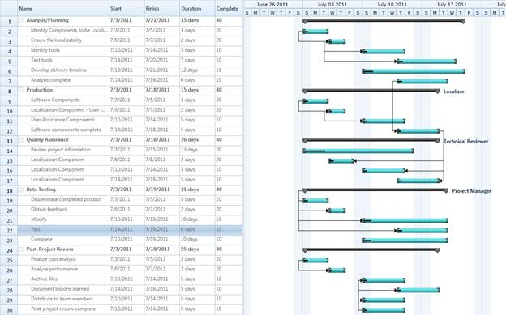
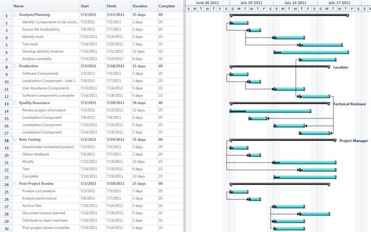
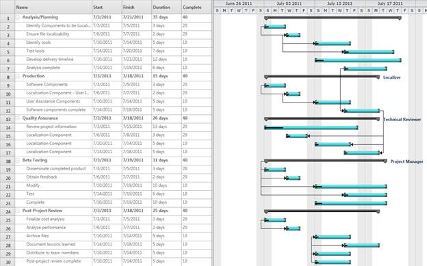
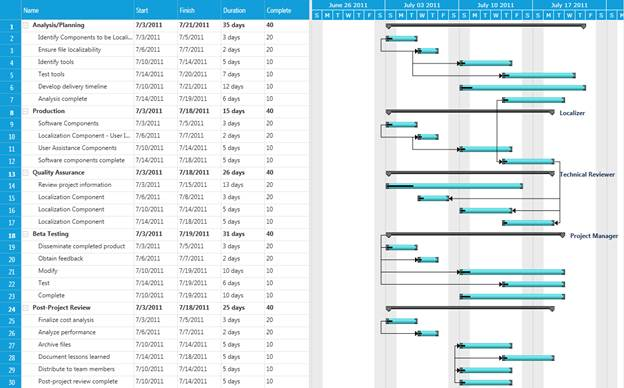

Essential Gantt enables you to customize the appearance of the control. This supports the following themes:
· Office2010Blue
· Office2010Black
· Office2010Silver
· Metro
Properties
|
Property |
Description |
Type |
Data Type |
Reference links |
|
VisualStyle |
Gets or set the VisualStyle Property of Gantt control. |
Dependency Property |
Enum. VisualStyle.Office2010Blue VisualStyle.Office2010Black VisualStyle.Office2010Silver VisualStyle.Metro |
NA |
Adding VisualStyle to Gantt Control
You can customize the theme using the VisualStyle property.
The following code illustrates how to set the VisualStyle of Gantt control:
|
[XAML] <Sync:GanttControl x:Name="Gantt" VisualStyle="Office2010Blue"/> |
|
[C#] Gantt.VisualStyle = VisualStyle.Office2010Blue;
|

Figure 32: Office 2010 Blue

Figure 33: Office 2010Silver

Figure 34: Office2010Black

Figure 35: Metro
Samples Link
To view samples:
1. Select Start -> Programs -> Syncfusion -> Essential Studio x.x.xx -> Dashboard.
2. Click Run Samples for WPF under User Interface Edition panel.
3. Select Gantt.
4. Expand the Styles item in the Sample Browser.
5. Choose the Gantt Visual Style sample to launch.